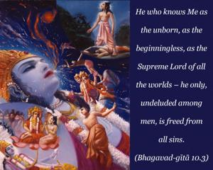
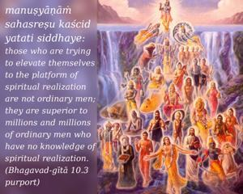
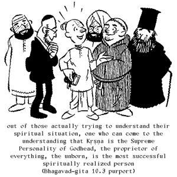
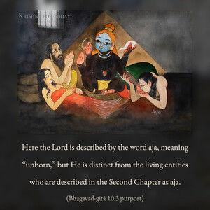
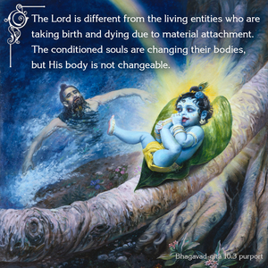
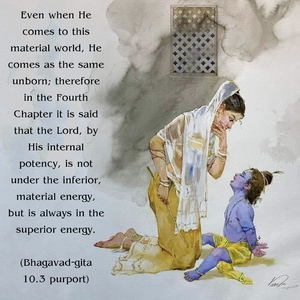

He who knows Me as the unborn, as the beginningless, as the Supreme Lord of all the worlds – he only, undeluded among men, is freed from all sins.






As stated in the Seventh Chapter (7.3), manuṣyāṇāṁ sahasreṣu kaścid yatati siddhaye: those who are trying to elevate themselves to the platform of spiritual realization are not ordinary men; they are superior to millions and millions of ordinary men who have no knowledge of spiritual realization. But out of those actually trying to understand their spiritual situation, one who can come to the understanding that Kṛṣṇa is the Supreme Personality of Godhead, the proprietor of everything, the unborn, is the most successful spiritually realized person. In that stage only, when one has fully understood Kṛṣṇa’s supreme position, can one be free completely from all sinful reactions.
Here the Lord is described by the word aja, meaning “unborn,” but He is distinct from the living entities who are described in the Second Chapter as aja. The Lord is different from the living entities who are taking birth and dying due to material attachment. The conditioned souls are changing their bodies, but His body is not changeable. Even when He comes to this material world, He comes as the same unborn; therefore in the Fourth Chapter it is said that the Lord, by His internal potency, is not under the inferior, material energy, but is always in the superior energy.
In this verse the words vetti loka-maheśvaram indicate that one should know that Lord Kṛṣṇa is the supreme proprietor of the planetary systems of the universe. He was existing before the creation, and He is different from His creation. All the demigods were created within this material world, but as far as Kṛṣṇa is concerned, it is said that He is not created; therefore Kṛṣṇa is different even from the great demigods like Brahmā and Śiva. And because He is the creator of Brahmā, Śiva and all the other demigods, He is the Supreme Person of all planets.
Śrī Kṛṣṇa is therefore different from everything that is created, and anyone who knows Him as such immediately becomes liberated from all sinful reactions. One must be liberated from all sinful activities to be in the knowledge of the Supreme Lord. Only by devotional service can He be known and not by any other means, as stated in Bhagavad-gītā.
One should not try to understand Kṛṣṇa as a human being. As stated previously, only a foolish person thinks Him to be a human being. This is again expressed here in a different way. A man who is not foolish, who is intelligent enough to understand the constitutional position of the Godhead, is always free from all sinful reactions.
If Kṛṣṇa is known as the son of Devakī, then how can He be unborn? That is also explained in Śrīmad-Bhāgavatam: When He appeared before Devakī and Vasudeva, He was not born as an ordinary child; He appeared in His original form, and then He transformed Himself into an ordinary child.
Anything done under the direction of Kṛṣṇa is transcendental. It cannot be contaminated by material reactions, which may be auspicious or inauspicious. The conception that there are things auspicious and inauspicious in the material world is more or less a mental concoction because there is nothing auspicious in the material world. Everything is inauspicious because the very material nature is inauspicious. We simply imagine it to be auspicious. Real auspiciousness depends on activities in Kṛṣṇa consciousness in full devotion and service. Therefore if we at all want our activities to be auspicious, then we should work under the directions of the Supreme Lord. Such directions are given in authoritative scriptures such as Śrīmad-Bhāgavatam and Bhagavad-gītā, or from a bona fide spiritual master. Because the spiritual master is the representative of the Supreme Lord, his direction is directly the direction of the Supreme Lord. The spiritual master, saintly persons and scriptures direct in the same way. There is no contradiction in these three sources. All actions done under such direction are free from the reactions of pious or impious activities of this material world. The transcendental attitude of the devotee in the performance of activities is actually that of renunciation, and this is called sannyāsa. As stated in the first verse of the Sixth Chapter of Bhagavad-gītā, one who acts as a matter of duty because he has been ordered to do so by the Supreme Lord, and who does not seek shelter in the fruits of his activities (anāśritaḥ karma-phalam), is a true renouncer. Anyone acting under the direction of the Supreme Lord is actually a sannyāsī and a yogī, and not the man who has simply taken the dress of the sannyāsī, or a pseudo yogī.